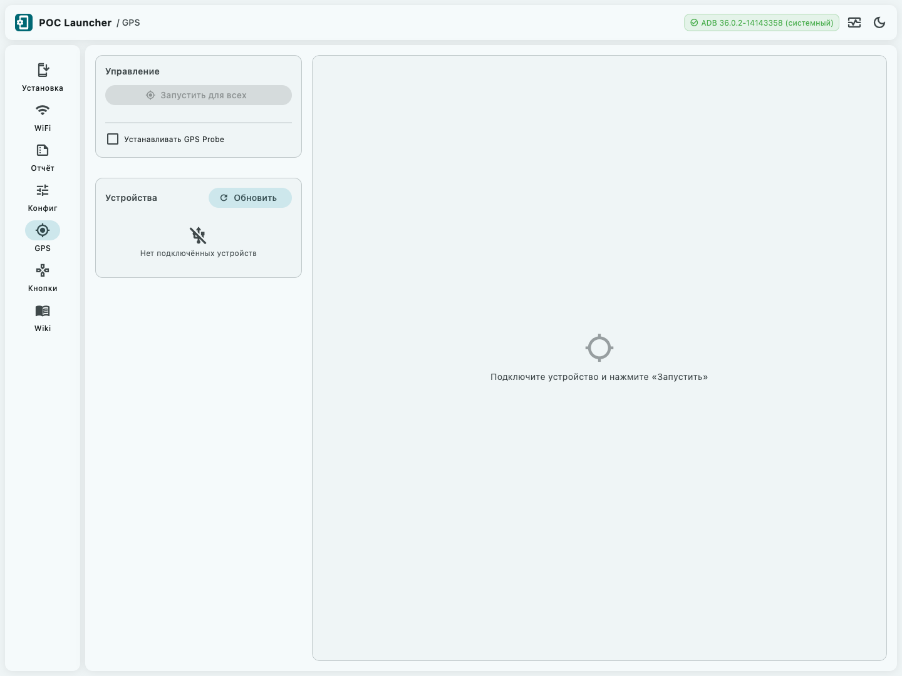
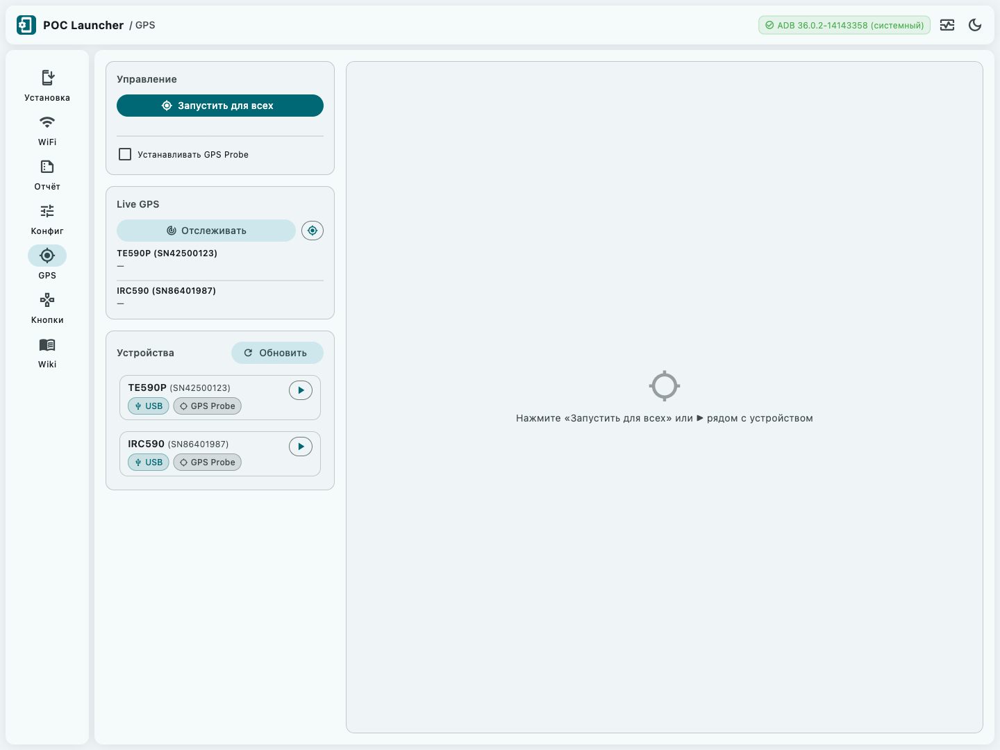
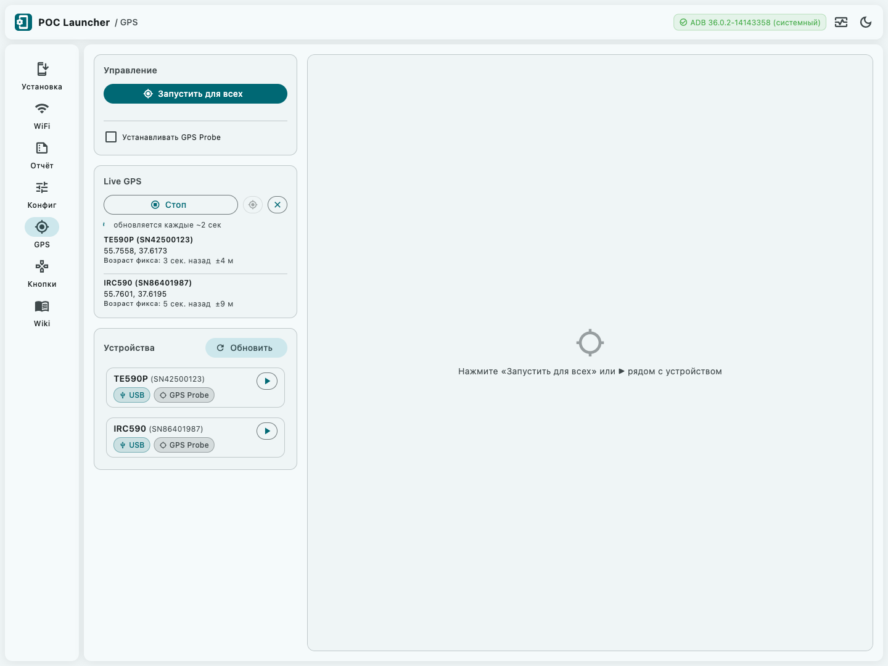
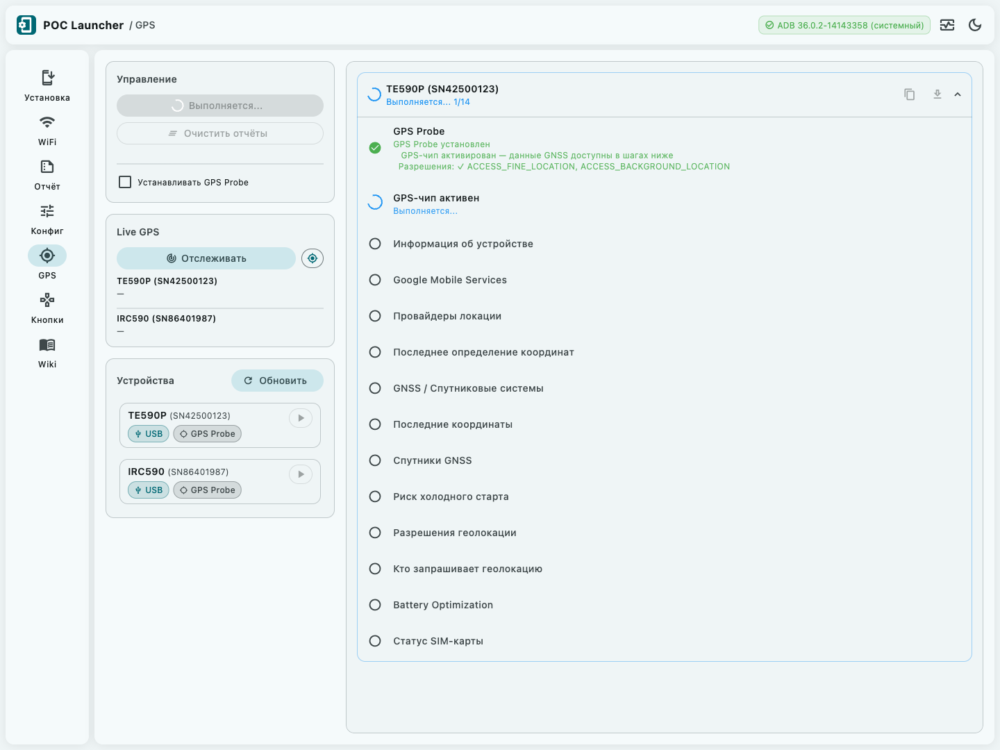
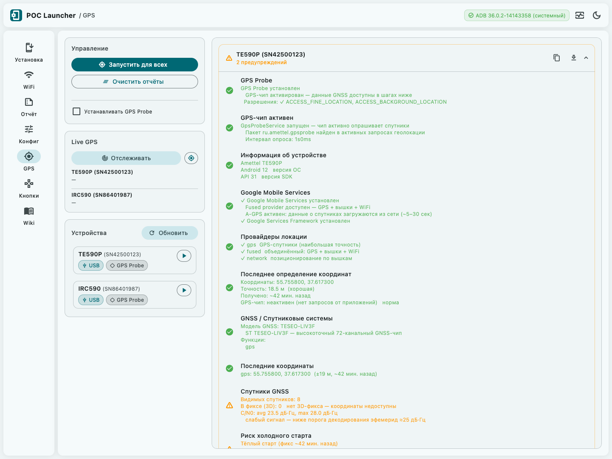

Вкладка «GPS» — руководство
Диагностика GPS-чипа Android-устройств: разрешения, спутниковый сигнал, качество позиционирования и прогноз времени первого фикса.
Панель управления
Экран делится на два столбца. Слева — панель управления, Live GPS и список устройств. Справа — карточки с результатами диагностики.

Запустить для всех — запускает полную диагностику на всех подключённых устройствах одновременно. Недоступна, пока устройств нет или диагностика уже выполняется. Во время работы иконка меняется на спиннер, подпись — на «Выполняется...».
Очистить отчёты — удаляет все результаты текущего сеанса. Появляется только если есть хотя бы один отчёт.
Удалить GPS Probe — удаляет вспомогательное приложение через ADB
(pm uninstall). Появляется только если GPS Probe установлен хотя бы на одном устройстве.
При следующей диагностике оно будет установлено заново.
Повторить / Повторить (N) — повторяет диагностику для устройств, у которых после первой установки GPS Probe рекомендован перезапуск. Появляется после первой установки.

Чекбокс «Устанавливать GPS Probe»
GPS Probe — минимальное приложение, которое запрашивает геолокацию, тем самым включая GPS-чип. Без активного запроса Android не активирует чип, и большинство шагов диагностики вернут пустые данные.
Снятие чекбокса отключает автоматическую установку — полезно если GPS Probe уже установлен или нужно проверить состояние чипа без внешнего приложения.
Live GPS
Панель Live GPS отображается только при наличии подключённых устройств. Она показывает координаты в реальном времени — без запуска полной диагностики.
Отслеживать — запускает непрерывный опрос координат
через dumpsys location. Данные обновляются каждые ~2 секунды.
Стоп — останавливает поток. Последние полученные координаты остаются на экране.
Кнопка с иконкой my_location (тултип «Получить координату один раз») — разовый запрос без запуска потока. Удобна для быстрой проверки без долгого ожидания.
Кнопка × (тултип «Сбросить») — очищает все данные из панели. Появляется только если есть хотя бы одна запись.

Для каждого устройства отображается:
| Поле | Значение |
|---|---|
| Координаты | Широта и долгота в десятичных градусах |
| Возраст фикса | Сколько секунд или минут назад получен последний GPS-фикс |
| ±N м | Горизонтальная точность из поля hAcc |
dumpsys location —
это не активный запрос к чипу, а запись любого приложения, которое ранее получало координаты.
Для актуальных данных убедитесь, что GPS Probe запущен (шаг «GPS-чип активен» в отчёте).
Список устройств
Ниже Live GPS — список подключённых устройств (USB и ADB over WiFi). Кнопка обновления (в заголовке панели) переподключает все TCP-устройства и обновляет список USB.
Рядом с каждым устройством отображается:
| Элемент | Значение |
|---|---|
GPS Probe
|
GPS Probe установлен на этом устройстве |
GPS Probe
|
GPS Probe не установлен |
| ▶ | Запустить диагностику только для этого устройства |
Карточка отчёта
Правая панель отображает отдельную карточку для каждого устройства. Если отчётов нет — показывается подсказка:
- «Подключите устройство и нажмите «Запустить»» — устройств нет;
- «Нажмите «Запустить для всех» или ▶ рядом с устройством» — устройства есть.

Заголовок карточки содержит:
| Элемент | Значение |
|---|---|
| Диагностика выполняется | |
| Все проверки пройдены | |
| Есть предупреждения (GPS работает, но есть риски) | |
| Критическая проблема (GPS не работает) |
Нажатие на заголовок сворачивает и разворачивает список шагов. Кнопки копирования и сохранения отчёта недоступны во время выполнения.

Шаги диагностики
Каждый шаг — строка с иконкой статуса, названием и кратким результатом. Шаги с подробными данными или кнопками действий раскрываются по клику.
| Шаг | Что проверяет |
|---|---|
| GPS Probe | Установка вспомогательного приложения, активирующего GPS-чип |
| GPS-чип активен | Наличие активного запроса геолокации от GPS Probe в системе |
| Информация об устройстве | Модель, производитель, версия Android и SDK |
| Google Mobile Services | Наличие GMS — влияет на A-GPS и Fused-провайдер |
| Провайдеры локации | Включённые провайдеры: GPS, Fused, Network |
| Последнее определение координат | Последний GPS-фикс: координаты, точность, возраст |
| GNSS / Спутниковые системы | Модель GNSS-чипа и поддерживаемые функции |
| Последние координаты | Кэшированные координаты от всех провайдеров |
| Спутники GNSS | Число спутников, C/N0, созвездия — ключевой показатель качества сигнала |
| Риск холодного старта | Прогноз TTFF на основе возраста последнего фикса |
| Разрешения геолокации | ACCESS_FINE, COARSE и BACKGROUND_LOCATION для приложения |
| Кто запрашивает геолокацию | Активные клиенты GPS + история доступа (AppOps) |
| Battery Optimization | Исключение приложения из Doze-режима |
| Статус SIM-карты | Оператор, тип сети, доступность A-GPS через вышки |
Спутники GNSS — ключевой шаг
Этот шаг показывает фактическое качество радиосигнала GPS-чипа. Именно от него зависит, получит ли устройство координаты и как быстро.

Видимые и используемые спутники
Видимых спутников — сколько спутников обнаружил чип. Для 3D-фикса нужно минимум 4.
В фиксе (3D) — спутники, участвующие в расчёте координат.
| Значение | Интерпретация |
|---|---|
| 0 | нет 3D-фикса координаты недоступны |
| 1–3 | только 2D точность снижена, высота недоступна |
| 4–5 | базовый 3D-фикс |
| ≥ 6 | хороший 3D-фикс ✓ |
C/N0 — качество сигнала
C/N0 (Carrier-to-Noise Density) — отношение несущей к уровню шума в дБ·Гц. Главный индикатор того, насколько хорошо чип «слышит» спутники.
| C/N0 (avg) | Состояние |
|---|---|
| < 20 дБ·Гц | очень слабый фикс маловероятен |
| 20–25 дБ·Гц |
слабый
ниже порога декодирования эфемерид ≈25 дБ·Гц; холодный старт займёт значительно больше времени |
| 25–30 дБ·Гц | умеренный фикс возможен, точность приемлемая |
| 30–40 дБ·Гц | рабочий ✓ |
| > 40 дБ·Гц | отличный ✓ |
Созвездия
Системы спутников, которые видит чип: GPS, GLONASS, Galileo, BeiDou, QZSS, IRNSS. Больше созвездий — больше резервных спутников — надёжнее фикс в закрытых зонах (под деревьями, у зданий).
dumpsys location.
Данные появляются только когда хотя бы одно приложение активно запрашивает геолокацию.
Если GPS Probe не запущен, шаг вернёт «Данные спутников недоступны»
с кнопкой «Активировать GPS-чип (GPS Probe)».
Действия в шагах
Некоторые шаги содержат кнопки для исправления проблем прямо из интерфейса — без ручного ввода ADB-команд.
| Кнопка | Что делает | Шаг |
|---|---|---|
| Включить геолокацию (GPS + Network, режим 3) | Включает провайдеры через settings put secure |
Провайдеры локации |
| Выдать WRITE_SECURE_SETTINGS | Выдаёт право менять системные настройки через ADB | Провайдеры локации |
| Выдать ACCESS_FINE_LOCATION | Выдаёт точные координаты приложению через pm grant |
Разрешения геолокации |
| Добавить в whitelist (ADB) | Исключает приложение из Doze через dumpsys deviceidle whitelist |
Battery Optimization |
| Активировать GPS-чип (GPS Probe) | Запускает GPS Probe Activity — чип начинает опрашивать спутники | GNSS-чип, Координаты, Спутники |
| Удалить GPS Probe | Удаляет приложение с устройства (pm uninstall) |
GPS Probe |
После нажатия кнопка показывает спиннер. По завершении — зелёная ✓ при успехе или красная ✗ при ошибке (нажмите на иконку ✗, чтобы раскрыть текст ошибки). Шаг автоматически перезапускается: результат обновится без полного перезапуска диагностики.
android.permission.WRITE_SECURE_SETTINGS.
Если оно не выдано — кнопка «Выдать WRITE_SECURE_SETTINGS» появляется первой.
После её нажатия снова запустите нужное действие.
Сохранение отчёта
Каждый отчёт можно сохранить двумя способами:
-
Скопировать в буфер (иконка копирования) — вставить в любое приложение. Формат: обычный текст с разделителями
═══. Удобно для отправки в чат или тикет. -
Сохранить в файл (иконка загрузки) — диалог выбора пути. Расширение
.txt→ текстовый формат;.md→ Markdown с разворачиваемыми секциями<details>для raw output.
Имя файла по умолчанию: gps_diag_<серийник>_<YYYYMMDD_HHmm>.
Обе кнопки недоступны во время выполнения диагностики.
Автоповтор после установки GPS Probe
При первой установке GPS Probe на устройство, в нижней части карточки появляется баннер:
«GPS Probe прогрет — данные GNSS готовы к замерам.
Для точных результатов повторите диагностику.»
Баннер содержит кнопку Повторить (N с) с обратным отсчётом 8 секунд. По истечении таймера диагностика запускается автоматически.
Глобальная кнопка Повторить в панели «Управление» выполняет ту же функцию, но для всех устройств с рекомендацией одновременно.